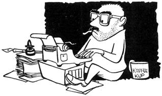

NOTE: The following series of high spirited articles originally appeared in INFORMATION GUIDE (now CARTOON WORLD) during 1957-1959.
For an unbroken succession of seven years I freelanced, fulltime, drawing and marketing advertising and magazine cartoons and-later-writing and marketing humor pieces for various publications.
Now get the picture: I lived through seven years of obtaining an income solely through my alleged efforts at the drawingboard and typewriter. I'm speaking singularly on the basis of that experience and what follows is based entirely upon it.
When I first quit a paid job (illustrator/ editor for an aircraft company's technical book department), I was 28 years old, in good health, had one wife, one son, $145.00 cash-on-hand, about a year's experience at selling magazine cartoons (totalling about $225.00 worth of sales), a lot of illusions regarding fulltime freelancing . . . and a huge dissatisfaction with any way of earning a living other than drawing cartoons.
Seven years later (presently, in fact) finds me with one wife (the same one), three sons, still in good health, 35 years old, less hair, more wrinkles, a hell of a lot more cash-on-hand than I started with, a definite disinterest in cartoon freelancing, a good job (four days, weekly) with a magazine and three days - weekly - in which everything I write sells . . . a happy fact that could not be, had I never learned how to make it happen through freelancing.
For me then, freelancing has been a transitory period: For you, it may be a hoped-for-future. I am going to offer a suggestion which (while certainly not the only way for a promising beginner to start freelancing), if followed to the letter, will keep you: (1) eating, (2) out of the cold, (3) freelancing and (4) from the necessity of giving up the whole idea and going back to a time clock.
Perhaps I'd better add: These points are guaranteed only if you are a type churl who really wants to freelance and whose family is given to adjusting reasonably easy to new situations.
You understand, I am not advocating the following method of getting into fulltime freelancing for anybody who cannot change their present paid-employment standard of living . . . nor for anyone whose wife does not implicity believe in their chances of eventually making the so-called grade.
THAT OLD DEVIL, OVERHEAD
Get your affairs in order, tabulate your bank account (if any) and move to the nearest, smallest town located on the edge of a river, lake or (better) an ocean.
Remember, I said the smallest town. Here, despite general opinion to the contrary, you will be able to rent a house or cottage (and don't look for luxury) for around $35.00 monthly. I've even lived in some places - rather on the order of elaborate chicken houses that rented for $25.00 with utilities included.
The farther away from industrial areas your town is, the lower the available rentals will be. I know of one cartoonist who rents a cabin with ten acres of ground for $10.00 monthly. Fabulous? Nope. The joint has an outhouse and no running water . . . but I told you: If you want to cut that overhead to your freelance pocketbook size, forget your present standard of living for awhile!
CHOW AND STUFF
Okay. You've moved. Your wife's relatives, your relatives and your mutual friends think you've lost your mind . . . but you have moved. Fine.
Now, as soon as you've unloaded your gear (I always rented unfurnished places, bringing a mere minimum of furniture of our own), hand your wife a hoe, grab a shovel and put in a vegetable garden. And do this right away!
Next investigate the fishing in the area. I mean, study it factually. Remember, the fishing you'll be doing is primarily to put fish on the table. And I don't care how inexpensively fish are selling in the markets - you get your own and save those seemingly absurb few cents. It'll make quite a difference over a year's stretch.
If your frau doesn't know how to feed a family of, say, four or five on $20.00 a week . . . and feed them an enjoyable variety of food on that sum - this is a swell time for her to learn how. It's been done. I know wives who are presently doing just that and it will be possible years from now. But only if you suppliment that $20.00 worth of store chow with vegetables from your own garden and fish caught, netted or speared yourself.
Within six months you should be able to get by with as little as $15.00 weekly for purchased food items - and eating grandly. Naturally, this doesn't include steak regularly.
SPENDING
Aside from occasional items of clothing, art supplies, stamps and medical costs - I suggest you keep all spending (for the first three months) to a miser's range. In short, no wild splurging just because you discover (as you will now and then) that you've made four or five-or even six or seven-hundred dollars in one month.
Assuming you've decided to freelance from an area not visited by heavy winters (and I do not see how anyone could make this particular method work outside of Florida, the southern states along the Gulf or California), forget all previous notions about what you must wear to be presentable. A clean shirt, clean washable britches and tennis shoes are fine. To hell with public opinion and convention, too for this first freelancing year, anyway.
If your wife simply cannot be happy in cotton dresses and inexpensive sandals, you're licked before you start. My clever little gal actually made sandals for all of us, using old inner-tubes and secondhand leather . . . and those sandals outlasted anything we ever purchased in a shoe store.
It's a tasty notion to keep $100 in the bank against the time (and it'll happen often) when every editor seems to be slow in issuing those checks. Secondary measures include friends who can and will loan you money until the checks finally arrive . . . or a landlord and grocer who understand the time element in your profession and don't mind waiting for their money while extending credit to you. I've used all three of these methods. I heartily endorse all three. Maybe you will, maybe you won't.
AND THEN WOT HOPPENS?
Without touching upon any particular method of marketing (several varieties work beautifully), I will underline the advisability of writing thank you notes everytime you make a sale. Editors like this. It even (although many selling cartoonists don't realize it) makes quite a difference in many extra sales.
Within a reasonably short time you should be selling a certain amount of cartoons on arranged terms, regularly. Today's freelance - if he has halfway decent ability and common sense - does not entirely rely on total speculation sales. It just isn't necessary.
Somewhere there are, at least, three editors waiting who will like your work sufficiently to buy from you regularly, give you assignment work and, in some cases, offer you cash advances against work-to-be-done. The last, of course, holds only if you don't snow them about being a wealthy-type success and you honestly let them know when you can really use some advance loot.
This money-in-front is not theory. It's fact. As of this writing I am into one book for better than $300 . . . strictly because the editor knows I can and will produce exactly what he wants for that magazine, when he wants it. Frankly, this isn't the best practice in the world but - given time, experience and accumulated skill - you'll be working the same deal occasionally.
Those three editors mentioned above should be able to give you a total of $200 monthly in assured sales. If you have a distinctive style (such as Tupper, Thaves, Harley or Pete Millar), I would feel safe in saying that - within six months of launching your freelance career - you should have something like $275 to $400 in assured monthly sales.
That's assuming your particular method of marketing includes getting editors interested in your availability . . . and keeping them interested. Same thing goes for any and all commercial cartooning. There just isn't (in my opinion) a very big difference between magazine editors and advertising purchasers.
IN CLOSING
I know there are a thousand ways to punch a million holes in what I've suggested . . . and only somebody with a better method will try it. You've got to want to freelance very much to do it the way I started and have outlined here.
This same system has been worked with other variations . . . and there are undoubtedly still more ways to make it give a guy his start in freelancing. It would take a book to give you all the tricks and I don't have the time to write that book. I'll leave it to you. I used the system exactly the way I've outlined it on these pages - and it worked line.
And why did I leave fulltime freelancing if things were so good? You may be silently asking that question and I'll be happy to answer: (1) I simply became disinterested in drawing cartoons fulltime, (2) I wanted to cut down the amount of hackwork necessary to earn a better-than-average living in order to try writing something other than pure magazine humor and (3) a magazine - SKIN DIVER - offered me a very fine four-days-a-week position. Since I have been a skin diving enthusiast for years, this has proven to be both fascinating and profitable . . . and I have the satisfying knowledge that I've learned enough about freelancing to go back to it, fulltime, anytime I find that either desirable or necessary, or both.
Now , if Mel Millar, Charlie Dennis, Bob Tupper or Pete Millar (who only recently began freelancing) could be coaxed into writing down their opinions, methods and reasons for freelancing, the younger, less experienced cartoonists would have the information it took me some 15 years to obtain.
In other words, don't imagine for one minute that the entire behind-the-scenes story of freelance cartooning and humor writing has ever been fully told.
Because it hasn't.
|
 |
|
|